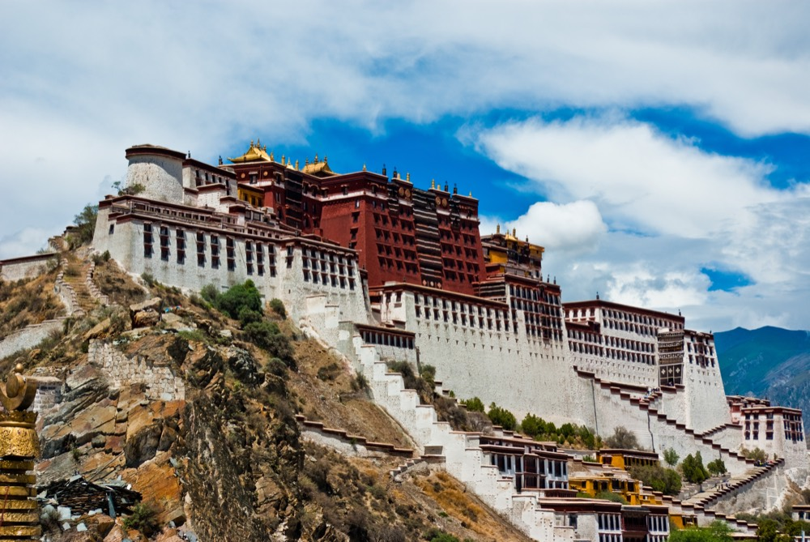
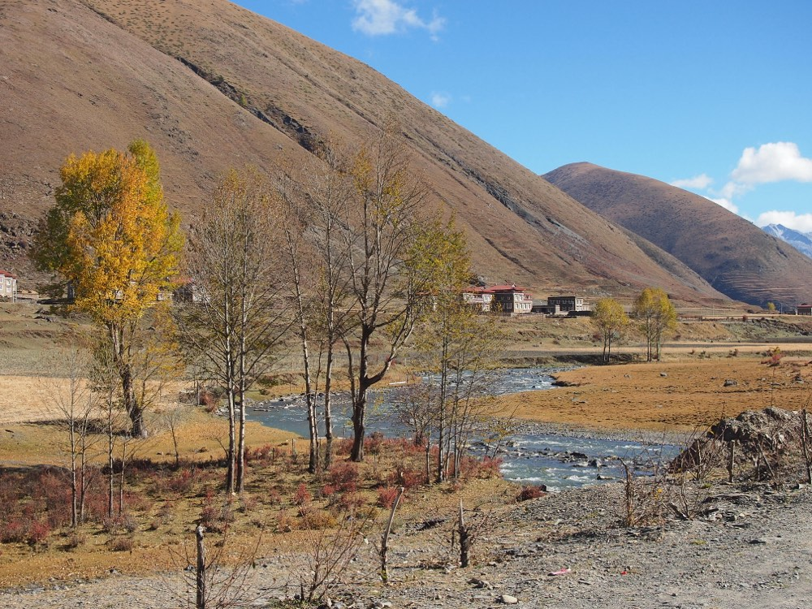
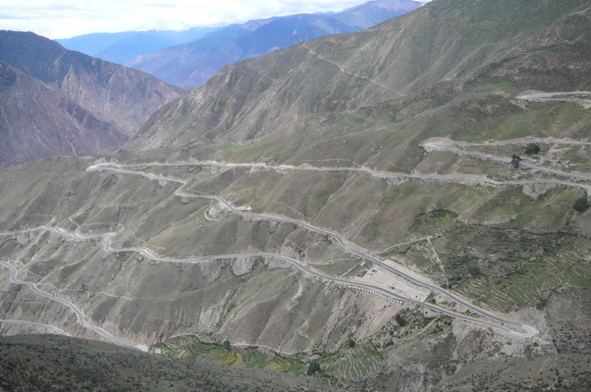
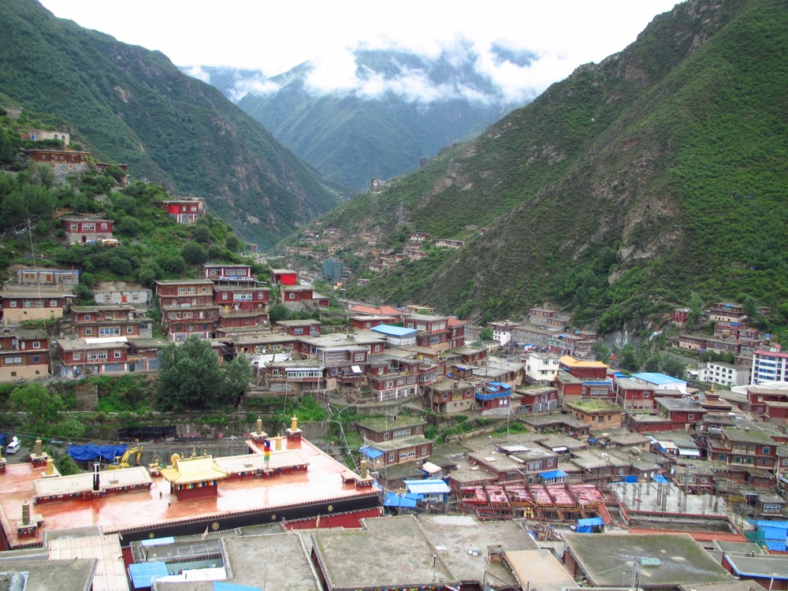

Chengdu to Lhasa Loop: G318 Out, G317 Back
Five unhurried weeks on the two great Sichuan–Tibet roads: out on the southern G318 past Hailuogou, the Nujiang 72 bends, Rawu Lake and the forests of Nyingchi to Lhasa, then home on the quieter northern G317 across the nomad plateau to Chamdo, the Dege printing house and the villages of Danba.
- Length
- 35 days
- Distance
- about 4,400 km
- Best time
- Mid Sep–mid Oct
- Per person
- from CNY 30,000
Researched November 2026 for mid September to mid October 2027. Permits, closures, hours and prices change, so check everything with your agency before you go. Drive times are realistic estimates (slower than route engines); confirm in Amap.
Why this loop
Both Sichuan–Tibet roads in one loop, without driving a road twice: the glaciers, gorges and forests of the southern G318, four nights in Lhasa, then the Tibetan cultural heartland of the northern G317, with its nomad grassland, great monasteries and the Dege printing house. The pace is built around altitude: you climb slowly, sleep low wherever the road allows, and rest every few days.
Mid September to mid October: the weeks after the monsoon. Rain and landslides on G318 tail off through September, skies clear and the forests and poplars turn gold. Lhasa is about 20°C by day and near freezing at night; on the northern plateau nights drop to about −5°C by early October, and the 5,000 m passes can see snow. Daylight is about 12 hours, so no driving after dark. National Day Golden Week (early October) jams G318 in Sichuan: this plan is on the quiet G317 that week.
Best time to go: mid September to mid October is best: the monsoon rains and landslides on G318 tail off, skies are clearest, the forests turn gold, and the northern plateau is still mild enough (nights about −5°C by early October). May to early June is a good second: dry and green, but colder on the passes, with snow still possible. Avoid June to early September (monsoon, landslides and closures around Tongmai and Bomê), National Day week in early October on the Sichuan G318 (huge jams), and November to April (ice, snow, closed passes and bitter nights on the northern road).
The route: Chengdu → Moxi (Hailuogou) → Kangding → Yajiang → Batang → Rumei → Zogang → Baxoi → Bomê → Nyingchi → Basum Tso → Lhasa → Nagqu → Sog → Dêngqên → Chamdo → Jomda → Dege → Ganzi → Daofu → Danba → Chengdu. 35 days, about 4,400 km, no drive over about 4 hours, rest or spare days at most five days apart, and four nights in Lhasa.
Highlights
- Hailuogou glacier by cable car, and the iron-chain bridge at Luding
- The high road: Zheduo Pass, Litang, and Dongda Shan at 5,130 m
- The Nujiang 72 bends and Rawu Lake
- Tongmai, Lulang’s forests and Namcha Barwa from Sejila Pass
- Lhasa: the Potala, the Jokhang and the Barkhor, Norbulingka and the Sera debates
- The nomad grassland of the northern road, Riwoqê’s great hall and Chamdo
- The Dege Parkhang, still printing from wooden blocks, Yilhun Lha-tso lake and the stone towers of Danba
Good to know
- Foreign visitors cannot travel independently in the Tibet Autonomous Region: a licensed Tibet agency must arrange the Tibet Travel Permit and any other permits for the exact route, and a licensed guide stays with the group throughout. Apply at least a month ahead. Get the agency to confirm in writing that the northern exit (Nagqu, Chamdo, Jomda, the Gangtuo bridge) is permitted for foreigners on your dates: reports conflict.
- Cars: agencies running foreigner self-drive trips use their own Tibet-registered cars with a temporary licence for the driver; a rental car from Chengdu may not be accepted. With a guide on board, plan two cars for six people and their luggage.
- Altitude is the main risk. Anyone older, or with heart or lung conditions, should see a doctor before booking. The two biggest steps in sleeping altitude are Zogang (3,780 m, Day 11) and Nagqu (4,500 m, Day 22); book oxygen rooms there and carry a pulse oximeter. Lhasa is the decision point: anyone not coping well flies home from there.
- Check that travel insurance covers your age at altitudes up to about 5,100 m on a road trip, and an evacuation. Many policies stop at 3,000–4,000 m or at age 70–80.
- Hotels inside the TAR must be licensed to take foreign guests; the agency books them to match the permit. Ask for oxygen-supplied rooms above 3,000 m.
- Closed to foreign visitors in 2026: Laigu and Midui glaciers (closed to everyone), the Yarlung Tsangpo Grand Canyon, Nanyi valley and Larung Gar. Check again a month before you go.
- Potala tickets are released 10 days ahead and the palace closes on Mondays (except public holidays): pick the start day so your Potala day is not a Monday. The agency books it.
- Petrol stations are far apart on G317: fill up whenever you can, especially at Chamdo and Jomda. Mobile signal drops out for long stretches.
Two ways to do it
💰 Best value
- Stay: the value pick in each city, 4-star or a platform-rated equivalent (see Where to stay).
- Eat: local specialities at well-rated everyday places.
- About CNY 30,890–48,470 per person for 35 days, including the agency cars, guide and permits, excluding flights to and from Chengdu.
✨ Best experience
- Stay: the St. Regis or Shangri-La in Lhasa (oxygen in the rooms), the best-rated hotels with oxygen supply on the high nights, and characterful Tibetan-style hotels in Kangding, Dege and Danba (see Where to stay).
- Eat: a proper Sichuan hotpot and banquet in Chengdu, Lulang stone-pot chicken, and the best Tibetan and Nepali restaurants in Lhasa.
- About CNY 42,060–64,200 per person.
Same route and days for both; only hotels and meals change.
Route map
● numbered: overnight stops in order ● stop on a drive day (lunch or sight). Tap a point for its days. Lines follow roads from OpenStreetMap routing and are approximate.
Itinerary: 35 days, 34 nights
Each driving day is either one drive (leave early, arrive for a late lunch, then sightseeing only) or two drives with a lunch stop in between. Short hops to sights are not counted.
Morning
Arrive and check in; an easy first day at 500 m.
Lunch
Lunch: Sichuan classics (mapo tofu, twice-cooked pork); ask for mild.
Afternoon
Tea in People’s Park and a stroll through Kuanzhai Xiangzi.
Morning
Giant Panda Base at opening, when the pandas are active (flat paths and shuttle carts).
Lunch
Lunch near the base or downtown.
Afternoon
Sichuan Museum or Wuhou Shrine and Jinli. Buy pulse oximeters and portable oxygen for the road; meet the agency for the briefing.
Morning
🚗 Chengdu → Moxi · 284 km · 4h
Leave about 8:30 on the Ya’an–Kangding expressway.
Lunch
Late lunch in Moxi.
Afternoon
Moxi old town and its 19th-century church; an early night at 1,600 m.
Morning
Park shuttle and cable car up to the glacier viewpoint (about 3,600 m by day: “climb high, sleep low”). Little walking; warm layers.
Lunch
Lunch in the park.
Afternoon
Back down to Moxi; a soak in the hot springs if energy allows.
Morning
🚗 Moxi → Luding · 49 km · 1h
Leave about 9:30.
Lunch
Lunch in Luding beside the 1706 iron-chain bridge (flat to view from the bank).
Afternoon
🚗 Luding → Kangding · 49 km · 1h
Arrive Kangding (2,560 m) mid-afternoon and rest.
Morning
A rest day to adapt. A slow walk along the river and Anjue Temple in town.
Lunch
Lunch: yak-meat hotpot.
Afternoon
Paoma Shan by cable car if everyone feels well; otherwise rest. Early night.
Morning
🚗 Kangding → Xinduqiao · 76 km · 2h
Leave about 8:30 over Zheduo Pass (4,298 m): a short photo stop only.
Lunch
Lunch in Xinduqiao (about 3,450 m, by day only) among the photographers’ poplars.
Afternoon
🚗 Xinduqiao → Yajiang · 63 km · 1h30
Down to Yajiang (2,530 m) in the Yalong valley to sleep low.
Morning
🚗 Yajiang → Litang · 133 km · 3h
Leave by 7:30: the longest day of the trip, over Jianziwan and Kazila passes.
Lunch
Lunch in Litang (4,014 m, by day only); a look at Chode Gompa from the car.
Afternoon
🚗 Litang → Batang · 170 km · 3h45
Over Haizi Shan (4,685 m) past Sisters Lake, then down to warm Batang (2,580 m).
Morning
A real rest day at low altitude; laundry.
Lunch
Lunch in town.
Afternoon
A gentle walk by the Batang river.
Morning
🚗 Batang → Markam · 103 km · 2h45
Leave by 7:00 through the Haitong gorge, where rockfall can hold traffic. Cross the Jinsha River into the Tibet Autonomous Region; the guide meets you at the border and handles the checkpoint at Markam.
Lunch
Lunch in Markam (about 3,870 m, by day only).
Afternoon
🚗 Markam → Rumei · 50 km · 1h15
Over Lawu Shan and down to Rumei (2,640 m) on the Lancang (Mekong) to sleep low. Power cuts are reported: carry torches.
Morning
🚗 Rumei → Zogang · 92 km · 2h45
Leave by 7:00 through the Jueba tunnel and over Dongda Shan (5,130 m), the highest point of the trip: ten minutes at the top at most.
Lunch
Late lunch in Zogang.
Afternoon
Rest. Zogang (3,780 m) is the first night above 3,000 m and a big step up: book an oxygen room and check everyone’s oxygen level morning and evening.
Morning
🚗 Zogang → Bangda · 104 km · 2h
Leave about 8:00 across the Yuqu valley and the high Bangda grassland.
Lunch
Lunch in Bangda (about 4,300 m: keep it short, or picnic in the car).
Afternoon
🚗 Bangda → Baxoi · 95 km · 2h30
Over Yela Shan (4,658 m) and down the Nujiang 72 bends to the Salween, then Baxoi (3,260 m).
Morning
🚗 Baxoi → Rawu Lake · 89 km · 2h15
Leave about 8:30 over Anjiu La (4,468 m).
Lunch
Lunch at Rawu Lake (about 3,900 m), with the lake from the roadside viewpoints.
Afternoon
🚗 Rawu Lake → Bomê · 127 km · 3h
Down the Parlung Tsangpo valley to Bomê (2,750 m). Section speed cameras: the guide keeps to the minimum times.
Morning
Rest and laundry at 2,750 m.
Lunch
Lunch in town.
Afternoon
A flat walk among the giant spruces near town if energy allows.
Morning
🚗 Bomê → Lulang · 156 km · 3h45
Leave about 8:00 through the Tongmai gorge, once the most feared stretch of G318, now bridged and tunnelled.
Lunch
Lunch in Lulang: stone-pot chicken (shiguoji).
Afternoon
🚗 Lulang → Nyingchi · 72 km · 1h45
Over Sejila Pass (about 4,560 m), with Namcha Barwa on a clear day, then down to Nyingchi (2,900 m).
Morning
Kept free for road delays behind you. If not needed: a slow morning by the Niyang River.
Lunch
Lunch in Bayi.
Afternoon
The giant cypress park (flat paths) or rest. Note: Nanyi valley and the Yarlung Tsangpo Grand Canyon are closed to foreign visitors.
Morning
🚗 Nyingchi → Basum Tso · 128 km · 2h30
Leave about 9:30 up the Niyang valley, then the side road to Basum Tso.
Lunch
Late lunch at the lake.
Afternoon
Basum Tso (about 3,480 m), a halfway step to Lhasa’s altitude: the island temple from the shore, and a quiet evening by the lake.
Morning
🚗 Basum Tso → Gongbo’gyamda · 90 km · 1h45
Leave about 8:30 back to the Niyang valley.
Lunch
Lunch in Gongbo’gyamda.
Afternoon
🚗 Gongbo’gyamda → Lhasa · 266 km · 3h30
On the toll-free expressway to Lhasa; the Mila tunnel avoids the 5,013 m pass. Rest at the hotel: Lhasa is 3,650 m, so no exertion today.
Morning
Jokhang Temple in the morning (book the day before), then a slow clockwise walk round the Barkhor with the pilgrims.
Lunch
Lunch near the Barkhor: thukpa, momos and sweet tea.
Afternoon
Rest. Evening view of the Potala from Potala Square.
Morning
The Potala on a timed ticket released 10 days ahead (closed Mondays, except public holidays). The main route climbs about 1,000 steps: go slowly. Easier option: the new Snow City route below the palace, which does not enter it.
Lunch
Lunch and a long rest.
Afternoon
An easy afternoon; a Nepali or Tibetan dinner.
Morning
Norbulingka, the Dalai Lamas’ summer palace gardens: flat and gentle.
Lunch
Lunch in town.
Afternoon
The monks’ debate at Sera Monastery (most afternoons except Sundays), or rest. This evening, decide who continues on the high northern road: anyone not coping well at 3,650 m flies to Chengdu tomorrow (about 2 h).
Morning
🚗 Lhasa → Damxung · 163 km · 2h
Leave about 9:00 on the Lhasa–Nagqu expressway past the Nyenchen Tanglha range.
Lunch
Lunch in Damxung (about 4,200 m).
Afternoon
🚗 Damxung → Nagqu · 166 km · 2h
Nagqu (4,500 m), the highest night of the trip: oxygen room, no activity, early night.
Morning
🚗 Nagqu → Xiaqu · 101 km · 1h45
Leave about 9:00 east on G317 across the nomad grassland.
Lunch
A simple lunch in Xiaqu.
Afternoon
🚗 Xiaqu → Sog · 130 km · 2h30
Down to Sog (about 3,990 m), 500 m lower than Nagqu.
Morning
🚗 Sog → Rongbu · 120 km · 2h30
Leave about 8:30 through Baqên.
Lunch
A simple lunch in Rongbu.
Afternoon
🚗 Rongbu → Dêngqên · 127 km · 2h15
Over the high passes to Dêngqên (about 3,830 m).
Morning
🚗 Dêngqên → Riwoqê · 145 km · 2h45
Leave about 8:30.
Lunch
Lunch in Riwoqê, with the great Yangkang assembly hall of the old monastery in town. (Tsedru monastery is a rough climb to about 4,800 m: not on this plan.)
Afternoon
🚗 Riwoqê → Chamdo · 90 km · 1h45
Down to Chamdo (3,270 m), the biggest town of eastern Tibet.
Morning
Rest and laundry, or the spare day for G317 delays.
Lunch
Lunch in town.
Afternoon
Qamdo Jampaling Monastery above the river confluence, if energy allows.
Morning
🚗 Chamdo → Tuoba · 113 km · 2h15
Leave about 8:00; fill up in Chamdo. The road is rough in places.
Lunch
A simple roadside lunch around Tuoba (bring snacks).
Afternoon
🚗 Tuoba → Jomda · 117 km · 2h15
Arrive Jomda (about 3,610 m); fill up again here.
Morning
🚗 Jomda → Dege · 93 km · 2h
Leave about 9:00 and cross the Jinsha River back into Sichuan; the guide leaves you at the bridge.
Lunch
Lunch in Dege.
Afternoon
The Dege Parkhang sutra printing house (opens 14:30–16:30 after lunch; steep, dark stairs inside).
Morning
🚗 Dege → Manigange · 91 km · 1h45
Leave about 9:00 through the Que’er Shan tunnel, which replaced a 5,050 m pass.
Lunch
Lunch in Manigange, with Yilhun Lha-tso (Xinlu Hai) lake a few minutes away: an easy shore path.
Afternoon
🚗 Manigange → Ganzi · 93 km · 1h45
Through the Ganzi valley of barley fields and Tibetan houses.
Morning
🚗 Ganzi → Luhuo · 96 km · 1h45
Leave about 9:00.
Lunch
Lunch in Luhuo.
Afternoon
🚗 Luhuo → Daofu · 70 km · 1h15
Daofu (about 2,980 m) and its painted timber houses.
Morning
🚗 Daofu → Bamei · 79 km · 1h30
Leave about 9:30.
Lunch
Lunch in Bamei, among the granite hills of the Huiyuan valley.
Afternoon
🚗 Bamei → Danba · 91 km · 2h
Down the Dadu valley to Danba (1,900 m): the first truly low night in over two weeks.
Morning
Rest. Jiaju Tibetan village from the viewing platform, reached by car (the village lanes have many steps).
Lunch
Lunch in Danba.
Afternoon
The Suopo stone watchtowers from the road.
Morning
🚗 Danba → Rilong · 114 km · 2h45
Leave about 8:00 up the Xiaojin valley (check the G350 works schedule the week before).
Lunch
Lunch in Rilong with the Siguniang peaks.
Afternoon
🚗 Rilong → Chengdu · 199 km · 3h
Through the Balang tunnel and down to Chengdu.
Morning
A spare day for delays; otherwise a slow morning.
Lunch
Lunch: dan dan noodles and Chengdu snacks.
Afternoon
A farewell hotpot.
Morning
Check out and fly home.
Lunch
Lunch at the airport or on the plane.
Afternoon
Driving, permits & altitude
- Inside the Tibet Autonomous Region (from the Jinsha bridge near Batang to the Gangtuo bridge near Dege) foreign visitors travel only on an agency-arranged itinerary with a licensed guide. The guide carries the permits and handles the checkpoints, which come several times a day.
- Self-drive for foreigners means the agency’s own Tibet-registered car with a temporary Chinese licence for the driver and the guide on board. Get it in writing: the car model, insurance, whether a support car is required, and what happens in Sichuan before and after the TAR.
- Speed in the TAR is enforced by section cameras that time you between points (for example four sections around Bomê); plan at about 40 km/h and expect fines of about CNY 1,200 for speeding. Travel times in this guide already allow for it.
- Roads: the Jueba tunnel (opened 2024) and the Que’er Shan tunnel (2017) skip two high passes, and the Mila tunnel on the Lhasa expressway avoids a 5,013 m pass. You still cross Zheduo Shan (4,298 m), Haizi Shan (4,685 m), Dongda Shan (5,130 m), Yela Shan (4,658 m) and Sejila (about 4,560 m) by day: stop for photos only.
- Rockfall and landslides are possible on G318 between Batang and Markam (the Haitong gorge) and around Tongmai and Bomê until late September. Leave early, carry water and snacks, and keep the spare days at Nyingchi and Chamdo free.
- The bridge on G317 near Maerkang collapsed in late 2025, so this loop returns via Danba instead.
- Fuel: run on petrol and treat charging as a bonus. Small towns often lack 95-octane; Chamdo and Jomda are the reliable fill-ups on the northern road.
- Altitude: carry a pulse oximeter and portable oxygen; ask your doctor about acetazolamide before you go. Anyone with a resting oxygen level persistently below about 85%, or a headache that will not go, vomiting, breathlessness at rest or confusion, should go down: do not try to push on with oxygen.
- Hospitals: the best are in Lhasa (the Tibet Autonomous Region People’s Hospital), Nyingchi and Chamdo; elsewhere there are county hospitals. Help in an emergency is mostly by road; plan to go down, not to wait for a helicopter. Emergency numbers: police 110, ambulance 120.
- Phone and payment: get a Chinese +86 SIM and set up Alipay and WeChat Pay before you go; carry cash for small towns, where signal is patchy. Download offline maps.
- Total driving: about 4,390 km.
Agency package for the group (estimate, before quotes) Two agency cars for 35 days (one self-drive, about CNY 1,000–1,800 a day; one with a driver, about CNY 1,500–2,500 a day), a licensed guide for about 19 days in the TAR (CNY 300–900 a day), permits (CNY 250–400 per person), food and lodging for the driver and guide, and fuel and tolls (CNY 8,000–10,000). Market ranges seen in 2026; get three written quotes.
| Group | Per person (6) | |
|---|---|---|
| Agency cars, driver, guide, permits, fuel and tolls | CNY 113,200–195,750 | CNY 18,870–32,620 |
Top sights





.jpg){kind=link}

.jpg){kind=link}





Chengdu
- Chengdu Research Base of Giant Panda Breeding: Pandas in wooded enclosures at ~500 m; the park is large and hilly, so use the electric carts and go at opening (07:30) when pandas are active. 07:30–18:00 (morning entry 07:30–12:00, afternoon 12:00–17:00) · 55 CNY · Real-name timed booking on the official WeChat/site or Trip.com with passport; 60+ reported free (check whether this applies to passports)
- Wuhou Shrine and Jinli: Temple to Zhuge Liang and the Three Kingdoms; flat gardens with a few thresholds, about 1 km of walking; Jinli lane next door is free. 09:00–19:00 (last entry 18:00) · 50 CNY · Official site/WeChat only; passport holders scan the QR at the main gate; the museum says it has no authorised resellers
Moxi/Hailuogou
- Hailuogou Glacier (cable car): Low-altitude glacier under Gongga Shan. Senior route: shuttle bus to Camp 3 (~2,940 m), cable car to Camp 4 (~3,600 m) and the viewing platform; the walk to the glacier tongue is ~1.8 km (30 min) and some trails were reported shut. Allow a full day. ~08:00–17:00; ticket window stops selling same-day tickets at 15:00 · 100 + bus ~70 + cable car ~140 (combo listed at 310) CNY · Book up to 10 days ahead on the Hailuogou WeChat account, Meituan or Trip.com (passport); daily quota; 65+ entry free under the 2022 rule (cable car discount unconfirmed)
Kangding
- Paoma Shan: The "Kangding Love Song" hill above town (~2,600–2,900 m); now free, with a shuttle to the core viewpoints so older visitors can skip the climb. ? · free (shuttle 15 one way / 30 return) CNY · No booking reported; check the shuttle on the day
- Mugecuo lake: Alpine lake at ~3,700 m north of Kangding; the sightseeing bus does the climbing, then flat boardwalks by the lake. Short walks only for older visitors at this height. 08:00–17:30 (last entry 16:30) · ~185–195 incl. bus CNY · Trip.com/Qunar ticket + return bus, passport accepted; ticket line 0836-2828218
Zheduo Shan / Xinduqiao
- Zheduo Shan pass: 4,298 m road pass, the first big one: stay in or close to the car, five minutes for photos, no exertion. open road · free · None
Litang
- Litang Chode Gompa (Changqing Chunke'er): Big Gelug monastery on a hill above Litang at ~4,000 m; drive to the top gate, the halls have steep steps. Very high: keep the visit short. ? · ? (reported free) CNY · Not verified; ask the guide
- Litong old town (Qianhu Zangzhai): Rebuilt Tibetan old town in Litang; flat lanes, free, easy evening stroll (still ~4,000 m). all day · free · None
Dongda Shan
- Dongda La pass: At ~5,130 m the highest point of the G318; photo stop from the car only, and carry oxygen. open road · free · None
Baxoi
- Nujiang 72 bends viewpoint (Yela Shan): Hairpins dropping ~1,500 m in 12 km from the Yela pass (~4,618–4,658 m); free parking and viewing deck at the top, no walking. Trucks cause daily jams; the new Nujiang tunnel may bypass the bends, so confirm the route. open road · free · None
Rawu Lake
- Rawu Lake: Glacial lake at ~3,850 m beside G318; view from roadside pull-offs, no walking needed. all day · free · None
Lulang
- Lulang forest viewpoint and Lulang town: Spruce forest and meadow views at ~3,700 m below Sejila pass; the viewing deck is a few steps from the car park; the town below is flat. ? · 35 (viewing deck, older figure; platforms list ~118 for packages) CNY · Pay at the gate; foreigners: the TAR agency books with passport scans; carry the same passport
Basum Tso
- Basum Tso and Tsozong Gongba islet: Sacred lake at ~3,480 m; the shuttle drives you round, and the islet temple is reached by a short floating bridge; mostly flat but some steps on the islet. ? · 120 (peak early May–31 Oct 2026) + bus; packages 155 CNY · Trip.com/Meituan or gate; foreigners: the TAR agency books with passport scans; carry the same passport
Lhasa
- Potala Palace (main route) UNESCO: Dalai Lamas' winter palace. Hard for older visitors: you climb about 1,000 steps (13 storeys) from ~3,650 m with steep wooden ladders inside, a 1.5–2 hour visit with timed entry. Easier: the Snow City route at the foot (below), plus the view from Potala Square or Chakpori. 09:00–15:40 last entry (early May–late October); 09:30–15:20 in winter · closed Mon (周一), except public holidays · 200 (peak, route 1); route 2: 100 CNY · Real-name, ~7–10 days ahead on the official WeChat mini program only; one booking per ID per 7 days; no changes; foreigners: the TAR agency books with passport scans; carry the same passport. Pick a day that is not a Monday.
- Potala Snow City (Shöl) route UNESCO: Opened 20 Sep 2026: the old town at the Potala's foot (Treasure Museum, Shöl prison, mint, noble houses), entered by the east and south gates; level ground, no climb into the palace. The senior alternative. 09:00–15:40 last entry (peak) · closed Mon (周一), except public holidays (assumed same as palace) · 25 (peak early May–late October) CNY · Separate ticket on the same official WeChat mini program; foreigners: the TAR agency books with passport scans; carry the same passport; tel 0891-6332558
- Jokhang Temple UNESCO: Tibet's holiest temple; mostly level, crowded dark chapels, a stair to the gilded roof (optional). About 1 hour. 08:30–17:30 (timed entry 08:30–13:30, afternoon untimed) · 85 CNY · Book 1 day ahead on the Jokhang mini program; foreigners: the TAR agency books with passport scans; carry the same passport
- Norbulingka UNESCO: Dalai Lamas' summer palace and park; flat but large (2–3 km if you walk it all), with a separate sightseeing cart. ~09:30–18:00 (winter hours; summer not found) · 60 (cart and zoo extra) CNY · Gate or agency; foreigners: the TAR agency books with passport scans; carry the same passport
- Sera Monastery debate: Monks debate in the courtyard 15:00–17:00, Mon–Sat (not Sunday); the courtyard is a gentle uphill 300–400 m from the gate at ~3,800 m, benches in the shade. ~09:00–17:00 · closed Debate not on Sun (周日无辩经) · 50 CNY · Gate ticket; foreigners: the TAR agency books with passport scans; carry the same passport
Sog
- Sog Tsanden monastery: Hilltop monastery nicknamed the "little Potala" at ~3,950 m; drive up, then stairs between halls. 10:00–18:30 · free (reported) CNY · Ask the guide
Riwoqê
- Riwoqê Tsuglakhang (Chakyema hall): Huge 13th-century assembly hall of Yangkong monastery, ~3,800 m; single level, flat approach. ? · ? CNY · Ask the guide
Chamdo
- Qamdo Jampaling monastery: Chamdo's main Gelug monastery on the hill between the two rivers (~3,250 m); drive up; go in the morning as some halls close after 16:00. all day; some halls close ~16:00 · free · None; guide accompanies
- Karuo Neolithic site: One of Tibet's three key prehistoric sites (5,000 years) at Jiaka village; open ground, short level walk. ? · ? CNY · Not verified; ask the guide
Dege
- Dege Parkhang (Sutra Printing House): 18th-century printing house with ~300,000 wood blocks; watch hand printing (season runs to about the 20th day of the 9th Tibetan month, so early October should be in season). Steep wooden stairs and ladders to the upper floors and roof; older visitors can watch on the ground floor. Dark, no flames, photo limits. 09:00–11:30, 14:30–16:30 · 50 (older report) CNY · Gate ticket; no booking found
- Gonchen monastery: Sakya monastery next to the Parkhang; level courtyard, a few steps into the halls. ? · ? (reported free) CNY · Not verified
Yilhun Lha-tso
- Yilhun Lha-tso (Xinlu Hai): Glacier-fed lake at ~4,040 m by G317 near Manigango, 4A since Feb 2025; boardwalk along the shore, keep it to the first few hundred metres. 08:30–18:30 · ? CNY · Gate; price not found
Ganzi
- Ganzi monastery: Large Gelug monastery on the slope above Ganzi town (~3,400 m) with views of the Chola range; drive up, then steps. ? · ? CNY · Not verified
Danba
- Jiaju Tibetan village: Hillside of painted Gyalrong stone houses at ~2,000 m; drive to the viewing platform at the top, the lanes between houses are steep. ? · 50 (from, Trip.com) CNY · Trip.com or gate (passport)
- Suopo watchtowers: Dozens of ancient stone towers across the Dadu river; best seen from the roadside viewpoint, no walking needed. all day · ? (viewpoint free) CNY · None
Siguniang / Rilong
- Shuangqiao Gou valley (Siguniang) UNESCO: The easiest Siguniang valley: the bus drives ~30 km up to ~3,800 m with stops on flat boardwalks, so older visitors barely walk. Part of the Sichuan Giant Panda Sanctuaries UNESCO site. 08:00–17:30 (last entry 15:00) · 150 incl. bus (seniors 70; 65+ entry free) CNY · Siguniang WeChat/Trip.com with passport; check whether the 65+ waiver applies to passports
Exhibitions
- All museums on the route: No exhibitions for 2027 announced yet Checked November 2026: neither the Sichuan Museum nor the Tibet Museum has published a September–October 2027 programme. Jinsha is due to reopen on early May after renovation and may open new galleries; check its WeChat account in spring 2027. Chinese museums usually announce shows one to three months ahead.
- Museums publish autumn 2027 shows only a few weeks ahead. This section will be updated closer to the time.
Museums
| Museum | Hours | Closed | Entry |
|---|---|---|---|
| Sichuan Museum Chengdu | 09:00–17:00 (holiday hours to 18:30) | Mon (周一) | free Real-name booking on the Sichuan Museum WeChat service account; passport handling not confirmed |
| Jinsha Site Museum Chengdu | ? | Closed until 30 Apr 2027; Mon (周一) previously | ? (70 before closure, unverified) Check reopening rules in 2027 |
| Wuhou Shrine Museum Chengdu | 09:00–19:00 (last entry 18:00) | 50 Official site/WeChat; passport QR at main gate | |
| Tibet Museum Lhasa | ~09:30–17:30 or 18:30 (sources differ) | Mon (周一), except holidays | free Free booking reported; foreigners: the TAR agency books with passport scans; carry the same passport. Closed Mon late September, so go late September |
| Chamdo Museum Chamdo | ? | ? | ? Ask the guide |
Most Chinese museums close on Mondays and need a free real-name booking with your passport.
Where to eat
Lunch and dinner options for every stop. Badges show the rating and review count from the source named, mostly Ctrip / Trip.com (out of 5; 4.5+ with 150+ reviews is our bar). Dianping scores did not appear in search listings, and Dianping blocks automated access, so they are not used. Places below the bar are kept only where nothing better is on the route, and are marked. Read November 2026; prices are per person.
Chengdu
- Lunch: Chen Mapo Tofu (Qinghua Road) Trip.com 4.6 (below our 4.5 bar or few reviews): The original mapo tofu, twice-cooked pork, fish-fragrant aubergine; mild: ask for 不辣 tofu, steamed pork ribs. CNY 60–75
- Lunch: Panxinshi (Chunxi Road) Ctrip 4.5 · 115 reviews (below our 4.5 bar or few reviews): Century-old Chengdu deli: braised meats (卤菜), cold-dressed dishes, rice; much of it not spicy. CNY 70
- Lunch: Yi Laoma Tihua (People's Park flagship) Ctrip 4.4 · 437 reviews (below our 4.5 bar or few reviews): Pork-trotter and white-bean soup (not spicy, good for elders), Sichuan home dishes. CNY 55
- Lunch: Ye Po Po Bobo Chicken (Taikoo Li) Ctrip 4.9 · 491 reviews: Leshan skewers in chilli or green-pepper (藤椒) oil; light snack lunch. CNY 49
- Dinner: Houtang Hot Pot (Taikoo Li flagship) Ctrip 4.9 · 220 reviews: Beef-tallow hotpot: fresh tripe, duck intestine, beef; mild: order a yuanyang pot with a clear/mushroom half. CNY 112
- Dinner: Kuan Xiangzi No. 3 (Kuanzhai Alley) Ctrip 4.5 · 288 reviews: Modern Sichuan in a courtyard house; set menus balance spicy and mild dishes. CNY 298
- Dinner: Mawangzi (Sichuan bistro) Ctrip 4.4 · 358 reviews (below our 4.5 bar or few reviews): Classic Sichuan home dishes done carefully: kung pao chicken, twice-cooked pork, mild soups. CNY 117
- Dinner: Shang Palace, Shangri-La Chengdu Ctrip 4.7 · 70 reviews (below our 4.5 bar or few reviews): Cantonese and refined Sichuan; the safe mild choice for the two elders. CNY 216
- Dinner: Yu Zhi Lan (below our 4.5 bar or few reviews): Chef Lan Guijun's tasting menu, light refined Sichuan; famous fine noodles.
- Dessert: He Ji Dan Hong Gao (Wenmiao West Street) Trip.com 4.9 · 45 reviews (below our 4.5 bar or few reviews): Chengdu egg pancakes with sweet fillings. CNY 15–25
Moxi
- Lunch: Yueshanju private kitchen (Yueshanju Garden Hotel, Moxi) Ctrip 4.5 · 2 reviews (below our 4.5 bar or few reviews): Sichuan home cooking in a hotel garden. CNY 30
- Dinner: Gancui Jiajia Ctrip 4.9 · 17 reviews (below our 4.5 bar or few reviews): Yak with wild bamboo shoots, numbing-pepper chicken; mild: yak stew, stir-fried greens. CNY 51
- Dinner: Chaihuo Fanzhuang (Laodifang) Ctrip 4.0 · 11 reviews (below our 4.5 bar or few reviews): Tibetan fragrant pork, walnut-flower with bacon, spicy chicken. CNY 61
Kangding
- Lunch: Shimo Douhua home cooking Ctrip 4.8 · 7 reviews (below our 4.5 bar or few reviews): Stone-ground tofu pudding, braised pork, dry-fried green beans; tofu pudding is mild. CNY 44
- Dinner: Zang Jia Yan Ctrip 5.0 · 14 reviews (below our 4.5 bar or few reviews): Tibetan: beef 'quilt' (牛肉盖被), yak buns, butter tea; mostly mild. CNY 81
- Dinner: Shujiuji yak mushroom hotpot (Liuliucheng flagship) Ctrip 4.7 · 12 reviews (below our 4.5 bar or few reviews): Fresh-sliced yak in wild-mushroom broth: a clear, non-spicy hotpot. CNY 70
- Dinner: Pine Green Kangding cuisine Ctrip 4.5 · 8 reviews (below our 4.5 bar or few reviews): Modern Kham dishes: beef quilt, black-pepper beef fried rice, Tibetan mash. CNY 108
Litang
- Lunch: Dingze Sichuan & Litang yak hotpot Ctrip 4.9 · 101 reviews (below our 4.5 bar or few reviews): Yak soup hotpot (mild), matsutake chicken, Kham beef quilt, twice-cooked pork. CNY 63
- Lunch: Weizhen Canguan Ctrip 5.0 · 95 reviews (below our 4.5 bar or few reviews): Sichuan home dishes, boiled yak, barley cakes. CNY 57
Yajiang
- Lunch: Yajiang Matsutake Noodles Ctrip 4.8 · 4 reviews (below our 4.5 bar or few reviews): Matsutake noodle soup and butter tea; mild. CNY 26
- Dinner: Sky Restaurant, Ruihong Hotel Ctrip 5.0 · 1 reviews (below our 4.5 bar or few reviews): Sichuan; matsutake chicken soup (mild). CNY 50
- Dinner: Chongqing Meishicheng (Chuanzang Street) Ctrip 5.0 · 2 reviews (below our 4.5 bar or few reviews): Matsutake chicken, maoxuewang (spicy). CNY 61
Batang
- Lunch: Huoshituan (Batang) Ctrip 5.0 · 9 reviews (below our 4.5 bar or few reviews): Claypot beef, matsutake chicken, yak with dried bamboo shoots. CNY 54
- Dinner: All-day restaurant, Holiday Hotel Batang Ctrip 4.2 · 9 reviews (below our 4.5 bar or few reviews): Yak with green pepper, cordyceps-flower chicken soup, matsutake chicken hotpot; mild options. CNY 86
- Dinner: Xianghe Fanzhuang (Jinxianzi Avenue) Ctrip 4.2 · 6 reviews (below our 4.5 bar or few reviews): Sichuan home cooking: chestnut braised pork, black-chicken soup pot. CNY 60
Rumei
- Lunch: Markam town Sichuan restaurants (lunch en route) (below our 4.5 bar or few reviews): Simple Sichuan; e.g. Shuweixuan (蜀味轩川菜馆, ~CNY 50, unrated). CNY 50
- Dinner: Tianxiang food hall, Rumei Shengyu Tianxiang Hotel (Zhuka Bridge) Ctrip 5.0 · 1 reviews (below our 4.5 bar or few reviews): Sichuan hotel restaurant above the Lancang River.
Zogang
- Lunch: Hotel restaurant (below our 4.5 bar or few reviews): Sichuan home dishes.
Rawu Lake
- Lunch: Shuxiang Sichuan restaurant (Rawu) Ctrip 5.0 · 6 reviews (below our 4.5 bar or few reviews): Sichuan dishes, Rawu lake fish. CNY 85
- Lunch: Restaurant, Phuntsok Khangsang Oxygen Hotel Rawu Ctrip 4.1 · 7 reviews (below our 4.5 bar or few reviews): Lamb, yak hotpot; hotel dining room, warm and clean. CNY 100
Baxoi
- Lunch: Ranmuqi Tibetan restaurant (Baxoi) Ctrip 4.8 (below our 4.5 bar or few reviews): Stone-pot chicken (small pot feeds 4), Tibetan dishes; mild. CNY 60–80
- Dinner: Yangsheng Junwangfu (Baxoi) Ctrip 4.8 · 7 reviews (below our 4.5 bar or few reviews): Wild mushrooms, matsutake, dry-pot ribs; mushroom dishes are mild. CNY 90
- Dinner: Sichuan Ya'an Laobing restaurant Ctrip 4.2 · 10 reviews (below our 4.5 bar or few reviews): Sichuan home cooking on G318. CNY 68
Bomê
- Lunch: Shuaige Canting Ctrip 4.8 · 35 reviews (below our 4.5 bar or few reviews): Stone-pot chicken, braised beef, steamed Bomê fish (mild), maoxuewang. CNY 74
- Dinner: Shengdi Zhuolong Tibetan banquet Ctrip 5.0 · 18 reviews (below our 4.5 bar or few reviews): Roast lamb ribs, Bomê beef soup dumplings, homemade yoghurt. CNY 106
- Dinner: Rongcheng Fandian (Bomê) Ctrip 5.0 · 6 reviews (below our 4.5 bar or few reviews): Plain Sichuan home dishes, cheap. CNY 41
Lulang
- Lunch: Lulang Namai Stone-Pot Chicken Manor Ctrip 5.0 · 10 reviews (below our 4.5 bar or few reviews): Stone-pot chicken (石锅鸡) with whole chicken and mushroom broth, pan-edge buns, Tibetan pork; not spicy. CNY 79
- Lunch: Lulang Cuihua stone-pot chicken Ctrip 4.0 · 45 reviews (below our 4.5 bar or few reviews): Mushroom stone-pot chicken, barley pastry; not spicy. CNY 78
- Lunch: Lulang Shiguowang (Lulang town flagship) Ctrip 4.2 · 8 reviews (below our 4.5 bar or few reviews): Stone-pot chicken with matsutake, cold yak. CNY 138
Nyingchi (Bayi)
- Lunch: Yanbang Junwangfu stone-pot chicken (Nyingchi flagship) Ctrip 5.0 · 8 reviews (below our 4.5 bar or few reviews): Mixed-mushroom stone-pot Tibetan chicken, barley cake; mild. CNY 65
- Dinner: Nanyu Shifu (Medog matsutake stone-pot chicken) Ctrip 5.0 · 9 reviews (below our 4.5 bar or few reviews): Matsutake stone-pot chicken, Tibetan pork with wood-ear. CNY 74
- Dinner: Lalesi Tibetan restaurant (Xingfu) Ctrip 4.7 · 5 reviews (below our 4.5 bar or few reviews): Tibetan pork wraps, cumin lamb ribs, sweet tea. CNY 97
- Dinner: Deqinglin Kitchen (Gongbu Old Street) Ctrip 4.0 · 9 reviews (below our 4.5 bar or few reviews): Indian/Nepali: beef masala, saffron chicken rice, naan. CNY 94
Gongbo'gyamda
- Lunch: Laoshan noodle house (Langse Road) (below our 4.5 bar or few reviews): Shaanxi noodles: zhajiang, saozi, tomato-egg; mild. CNY 22
- Dinner: Chengdu Fandian Ctrip 5.0 · 1 reviews (below our 4.5 bar or few reviews): Sichuan home dishes.
- Dinner: Bashong Lake fish house Ctrip 4.8 · 5 reviews (below our 4.5 bar or few reviews): Ba River fish, braised Tibetan pork, wild mushrooms, matsutake. CNY 84
Lhasa
- Lunch: Guangming Gangqiong Sweet Tea House Ctrip 4.6 · 366 reviews: Sweet milk tea, Tibetan noodles, beef dumplings; very local, mild. CNY 9
- Lunch: Makye Ame (Barkhor) Ctrip 4.4 · 416 reviews (below our 4.5 bar or few reviews): Tibetan and Nepali dishes on a rooftop over Barkhor: yak curry, momos, butter tea. CNY 89
- Lunch: Amdo Norzen Tibetan (branch 1) Ctrip 4.8 · 55 reviews (below our 4.5 bar or few reviews): Tibetan: yak meat, momos, tsampa, yoghurt; mild. CNY 83
- Lunch: Jixiang Shengxue Tibetan Ctrip 4.6 · 86 reviews (below our 4.5 bar or few reviews): Tibetan home dishes and sweet tea. CNY 84
- Dinner: Lhasa Kitchen Ctrip 5.0 · 55 reviews (below our 4.5 bar or few reviews): Nepali, Indian and Tibetan: curries, momos, naan; mild curries on request. CNY 58
- Dinner: Namaste (Yutuo Road) Ctrip 4.1 · 282 reviews (below our 4.5 bar or few reviews): Nepali/Indian: dal bhat, curries, yak steak. CNY 74
- Dinner: Nepal Snow Lotus (Beijing East Road) Ctrip 4.0 · 22 reviews (below our 4.5 bar or few reviews): Nepali run: yak steak, chicken biryani, Nepali sweet tea. CNY 82–88
- Dinner: Jiumen Sichuan mansion Trip.com 4.7 · 6 reviews (below our 4.5 bar or few reviews): Sichuan classics; ask 微辣 or 不辣.
- Dinner: Tiancun sour-soup yak hotpot (Jokhang) Ctrip 5.0 · 17 reviews (below our 4.5 bar or few reviews): Sour-soup fresh yak hotpot; tangy rather than hot. CNY 86
- Dinner: Chinese restaurant, Songtsam Linka Lhasa Ctrip 5.0 · 7 reviews (below our 4.5 bar or few reviews): Refined Chinese and Tibetan in a boutique hotel near the Potala; the nice dinner. CNY 199
- Dinner: Shang Palace, Shangri-La Lhasa Trip.com 5.0 · 7 reviews (below our 4.5 bar or few reviews): Cantonese and Sichuan; mild choices for the elders.
Nagqu
- Lunch: Chuanwei lamb soup Ctrip 4.3 · 11 reviews (below our 4.5 bar or few reviews): Lamb soup and offal soup: warming at 4,500 m, mild. CNY 79
- Dinner: Laochaifang firewood chicken Ctrip 5.0 · 6 reviews (below our 4.5 bar or few reviews): Firewood-pot chicken with pan-edge bread (spicy base; ask for less chilli). CNY 84
- Dinner: Jiayuguan Yilasi BBQ (halal) Ctrip 5.0 · 7 reviews (below our 4.5 bar or few reviews): Halal: big-plate chicken, poached chicken, kebabs. CNY 67
Xiaqu
- Lunch: Roadside Sichuan/noodle canteen or packed lunch (below our 4.5 bar or few reviews): Noodles, simple stir-fries.
Sog
- Lunch: Zhao's hand-rubbed noodles (below our 4.5 bar or few reviews): Hand-made noodles; mild.
- Dinner: Hotel restaurant (below our 4.5 bar or few reviews): Sichuan home dishes.
Rongbu / Chidu (G317)
- Lunch: Roadside canteen or packed lunch (below our 4.5 bar or few reviews): Noodles, simple Sichuan stir-fries.
Dêngqên
- Lunch: Tianyoutian yak-trotter soup pot (Dêngqên) Trip.com 5.0 · 51 reviews (below our 4.5 bar or few reviews): Yak-trotter clear soup pot (mild) or spicy version. CNY 74
- Dinner: Tangwan Sichuan, Cordyceps Hotel Ctrip 5.0 · 4 reviews (below our 4.5 bar or few reviews): Sichuan: garlic white pork, pepper ribs, spicy fish slices. CNY 71
Riwoqê
- Lunch: Chuanqiong Fandian (below our 4.5 bar or few reviews): Sizzling beef, ginger pork knuckle, pea shoots. CNY 53
- Lunch: Qionglai Fandian (Xiaokang Road) Ctrip 5.0 · 1 reviews (below our 4.5 bar or few reviews): Sichuan home dishes.
Chamdo
- Lunch: Yunnan Tanghuo smoked ribs pot (Qichi Garden) Ctrip 4.3 · 8 reviews (below our 4.5 bar or few reviews): Yunnan cured-rib soup pot; not spicy. CNY 68
- Dinner: Shuzhong Wu chestnut chicken pot (Chama Square) Ctrip 4.7 · 11 reviews (below our 4.5 bar or few reviews): Stone-pot chestnut chicken; mild. CNY 131
- Dinner: Shuxiang Yunting hotpot (Kanuo International) Ctrip 3.7 · 6 reviews (below our 4.5 bar or few reviews): Sichuan beef-tallow hotpot; order yuanyang for mild. CNY 136
Jomda
- Lunch: Heshunyuan (below our 4.5 bar or few reviews): Stone-pot sour yak, fish-fragrant aubergine, mapo tofu. CNY 54
- Dinner: Private kitchen, Gelin Wanhao Hotel (below our 4.5 bar or few reviews): Grilled fish, twice-cooked pork set meals. CNY 80
Manigange / Yilhun Lha-tso
- Lunch: Meiduo Moonlight guesthouse restaurant (Cuo'a) Ctrip 4.0 · 3 reviews (below our 4.5 bar or few reviews): Guesthouse home cooking near Yilhun Lha-tso.
- Lunch: Restaurant, Tsangyang Gyatso Love Song Hotel (Manigange) (below our 4.5 bar or few reviews): Hotel Sichuan/Tibetan dishes.
Dege
- Lunch: Mouzi Hupang fresh-braised beef (below our 4.5 bar or few reviews): Fresh braised beef and offal. CNY 38
- Dinner: Jiaxiangyuan (below our 4.5 bar or few reviews): Cured trotter hotpot (mild), wild mushrooms with bacon, braised yak. CNY 72
Ganzi
- Lunch: Lhamo Tibetan Ctrip 4.8 · 11 reviews (below our 4.5 bar or few reviews): Beef flatbread, whole yak tongue, butter tea, hand-held beef; mild. CNY 59
- Dinner: Kangzhu Tibetan Ctrip 5.0 · 6 reviews (below our 4.5 bar or few reviews): Roast beef, beef flatbread, fried noodles. CNY 54
- Dinner: Yingbin Fandian Ctrip 4.3 · 7 reviews (below our 4.5 bar or few reviews): Sichuan home dishes: twice-cooked pork, mapo tofu. CNY 40
Luhuo
- Lunch: Yejun yak soup pot Ctrip 4.8 · 6 reviews (below our 4.5 bar or few reviews): Wild-mushroom yak soup pot; mild. CNY 72
- Lunch: Chongqing Kouweixiang Sichuan Ctrip 4.4 · 9 reviews (below our 4.5 bar or few reviews): Maoxuewang, crispy potatoes, mapo tofu, braised beef. CNY 49
Daofu
- Lunch: Huangji farmhouse kitchen Ctrip 4.3 · 6 reviews (below our 4.5 bar or few reviews): Sweet-and-sour ribs, sour-cabbage fish, dry-fried intestines. CNY 54
- Dinner: Himalaya Kitchen (below our 4.5 bar or few reviews): Beef quilt, butter mushrooms, butter tea; mild. CNY 65
Bamei
- Lunch: Aluo Tibetan Ctrip 4.6 · 5 reviews (below our 4.5 bar or few reviews): Stir-fried beef, dry-pot yak, butter tea. CNY 67
- Lunch: Restaurant, Qianning Manor (Bamei) Ctrip 5.0 · 1 reviews (below our 4.5 bar or few reviews): Braised yak, dressed beef, firewood chicken. CNY 58
Danba
- Lunch: Zheng Jie private kitchen Ctrip 4.9 · 7 reviews (below our 4.5 bar or few reviews): Home dishes: dressed fish, dressed chicken, braised chicken feet. CNY 43
- Dinner: Jisuo cliff restaurant, Guangyulin Hotel Ctrip 4.2 · 5 reviews (below our 4.5 bar or few reviews): Hand-held yak, highland cured-meat platter; valley views. CNY 97
Rilong (Siguniang)
- Lunch: Abalang Tibetan garden restaurant Ctrip 4.6 · 11 reviews (below our 4.5 bar or few reviews): Yak soup pot, wild mushrooms with bacon, barley-yoghurt cake; mild. CNY 75
- Lunch: Shiweixuan Sichuan Ctrip 4.0 · 9 reviews (below our 4.5 bar or few reviews): Beef noodles, potato with bacon, braised yak, matsutake chicken soup. CNY 38
Shopping
- Kuanzhai Xiangzi (Chengdu): Qing-era lanes: tea houses, Sichuan snacks, crafts and cafés on nearby Paotongshu Street; flat, free. all day (shops ~10:00–22:00)
- Jinli (Chengdu): Lantern-lit lane beside Wuhou Shrine: snacks, shadow puppets, Shu brocade souvenirs; free. all day (shops ~10:00–22:00)
- Love Song Square and the old town streets (Kangding): Yak jerky, highland barley snacks, Tibetan dress and evening circle dancing in the square. ~10:00–22:00 (?)
- Barkhor Street (Lhasa): Kora round the Jokhang; prayer flags, incense, thangkas, turquoise, yak-wool shawls; flat but crowded, bargain hard. all day (shops ~09:00–22:00)
- Parkhang print shop (Dege): Hand-printed prayer sheets and wood-block prints sold at the printing house. with Parkhang hours
- Litong old town (Litang): Yak-butter, Tibetan crafts and the Kham cafés of the rebuilt old town. all day
Where to stay
Two picks per city: a value pick (4-star or a platform-rated equivalent; platform grades are not official star ratings) and a best-experience option. Hotels should not refuse foreign guests, but confirm in writing that they will register six foreign passports and have parking for a large MPV. Prices are CNY per room-night as observed in November 2026 for a September or October night, or the typical rate where none was listed yet. Inside the TAR the agency books hotels licensed for foreign guests to match the permit, so treat these as guides.
| City | 💰 Value | ✨ Experience |
|---|---|---|
| Chengdu 2 night(s) | Holiday Inn Express Chengdu Tianfu Square Booking.com /10, 2,562 reviews 8.8 CNY 374 · Lift, wheelchair-accessible rooms and toilets with grab rails; garage parking. International chain, takes foreign passports. | Niccolo Chengdu Booking.com /10, 224 reviews 9.3 CNY 1574 · High-floor rooms above IFS, indoor heated pool, EV charging; about 3.5 km from Kuanzhai Xiangzi. The Temple House was not on Booking.com and was not priced. |
| Moxi (Hailuogou) 2 night(s) | The Long March Hotel by Meritstone Ctrip /5, 297 reviews 4.5 CNY ~314 · Opened 2025; lift, accessible rooms, handrails, wheelchairs and a pool lift; hot-spring centre about CNY 128 per person. Takes guests from any country. Moxi is about 1,600 m: no oxygen needed. | Hailuogou Seven Valleys Source Onsen Resort (SeptValley) Ctrip /5, 573 reviews 4.8 CNY ~454 · Free hot springs with snow-mountain views; lift, corridor and stair handrails, free parking. Takes guests from any country. |
| Kangding 2 night(s) | Grand Madison Kangding Kangba Ctrip /5, 678 reviews 4.6 CNY ~274 · Opened 2010, refurbished 2019; lift and a large car park. Takes guests from any country. About 2,600 m; no oxygen listed. The better-rated IntercityHotel at Love Song Square was left out: it accepts guests aged 18–80 only. | Yuntu Tanggu Hot Spring Resort Ctrip /5, 252 reviews 4.8 CNY 1034 · Opened 2024; free hot-spring pools open 24 hours, lift, oxygen facilities (an oxygen concentrator costs extra). Takes guests from any country; age limit 18–90. Higher than town: check altitude for older travellers. |
| Yajiang 1 night(s) | Vienna Hotel Yajiang (G318) Ctrip /5, 1,411 reviews 4.5 CNY ~294 · Opened 2021; lift. Takes guests from any country. Parking is a mechanical multi-level stack: confirm that two large SUVs fit, or ask for ground spaces. About 2,600 m. | Muya Zangzhai Grand Hotel Ctrip /5, 98 reviews 4.5 CNY ~487 · Opened 2026; Tibetan-village style, heated indoor pool, lift. Takes guests from any country. Few reviews yet. About 2,600 m. |
| Batang 2 night(s) | Holiday Inn Batang Ctrip /5, 1,062 reviews 4.7 CNY ~253 · Opened 2019; lift, fresh-air system and humidifiers; no oxygen listed (about 2,600 m). Takes guests from any country. | Minyoun Rezen Hotel Batang (G318) Ctrip /5, 845 reviews 4.8 CNY 901 · Opened 2024, the top-rated hotel in town; lift, oxygen bottles given on request. Takes guests from any country. |
| Rumei 1 night(s) | Songtsam Rumei Lodge Ctrip /5, 205 reviews 4.6 CNY ~1,400–2,200 · The only hotel found in Rumei that takes foreign guests ("any country"; non-mainland guests show the Tibet entry letter). Same hotel for both picks. Lift; no oxygen (about 2,600 m). Guests report overnight power cuts (after midnight to about 6 am) and a night alarm: bring torches. Breakfast CNY 150 per person. | Songtsam Rumei Lodge Ctrip /5, 205 reviews 4.6 CNY ~1,400–2,200 · Only one suitable option: the other Rumei hotels on Ctrip (Hanting G318, City Comfort Inn, Rumei Resort at Zhuka Bridge) accept mainland, Hong Kong, Macau and Taiwan ID only. Power cuts at night are reported. |
| Zogang 1 night(s) | Zogang Yuexi Holiday Hotel (Hongqi Square) Ctrip /5, 1,262 reviews 4.5 CNY ~187 · Accepts guests from any country. Diffused room oxygen (弥散供氧); some guests found the concentrators weak. Lift. Opened and refurbished 2018. Zogang is about 3,800 m. | Zogonvillena International Hotel Ctrip /5, 950 reviews 4.5 CNY ~227 · Accepts guests from any country. In-room oxygen concentrator (type unverified: not 弥散); lift. No clearly better hotel exists here. The newer Wanhui Inter-State was left out: it accepts guests aged 18–65 only. |
| Baxoi 1 night(s) | Baxoi Kangcheng Oxygen Supply Hotel (G318) Ctrip /5, 1,180 reviews 4.6 CNY ~213 · Opened 2024. Accepts guests from any country. In-room oxygen concentrator and humidifier (bedside, not 弥散); lift. Baxoi is about 3,260 m. | 318 Panorama Hotel (G318) Ctrip /5, 234 reviews 4.7 CNY ~200 · Opened September 2025. Accepts guests from any country. Diffused oxygen (弥散供氧, one guest felt little effect); lift. Similar price to the value pick: newer, with views. The Eight Stays Royal (帝标) was left out: it accepts guests aged 18–78 only. |
| Bomê 2 night(s) | Vienna Hotel Bomê (G318) Ctrip /5, 777 reviews 4.8 CNY ~287 · Opened 2025. Accepts guests from any country. Lift. No oxygen listed; Bomê is about 2,700 m, so it is not needed. | Songtsam Bome Linka Ctrip /5, 307 reviews 4.7 CNY ~1388 · Opened 2020. Accepts guests from any country. Lift; no diffused oxygen (not needed at about 2,700 m). Outside the town: about a half-hour drive (unverified). |
| Nyingchi 2 night(s) | Atour Hotel Nyingchi Linhai Park (Gongbu Tianjie) Ctrip /5, 1,467 reviews 4.8 CNY ~260 · Opened 2023. Accepts guests from any country. Lift; oxygen concentrator and humidifier in rooms (per guests). Bayi is about 2,950 m. | Nyingchi Joy Crown Resort Ctrip /5, 2,198 reviews 4.8 CNY 1087 · Opened 2022, the top-rated resort in Nyingchi. Accepts guests from any country. Diffused room oxygen (弥散供氧), lift, accessible rooms, handrails and wheelchairs on request. |
| Basum Tso 1 night(s) | Shanhu Oxygen-enriched Hotel Ctrip /5, 63 reviews 4.6 CNY ~300–500 · Opened 2026, few reviews. Accepts guests from any country. 24-hour diffused oxygen (弥散供氧); lift. About 3,500 m. Nearby Qingmei Qingyuan and Yipinxiang take mainland/HK/Macau/Taiwan ID only. No Gongbo'gyamda county-town hotel was checked. | Songtsam Basum Tso Linka Ctrip /5, 1,137 reviews 4.6 CNY ~1,600–2,500 · Opened 2023; lake and snow-mountain views, back gate to the shore. Accepts guests from any country. Diffused oxygen in every bedroom, the spa and the gym. Lift not stated: ask for a ground-floor room. Golden Week falls about now. |
| Lhasa 4 night(s) | ChunQiu Oxygen-Rich Hotel (Potala Palace, Barkhor) Ctrip /5, 5,261 reviews 4.8 CNY ~193 · Opened 2021. Accepts guests from any country. 24-hour room oxygen with nasal tubes, plus a micro-pressure oxygen chamber; lift. Walk to the Jokhang and Barkhor. Lhasa is about 3,650 m. Hampton by Hilton was left out: check-in for ages 18–70 only. | The St. Regis Lhasa Resort Booking.com /10, 46 reviews 8.7 CNY 1799 · Rooms with oxygen supply (Ctrip tag "可供氧房"); lift, indoor heated pool, spa. International hotel listed for foreign booking. Shangri-La Lhasa had no availability on Booking.com for the date. |
| Nagqu 1 night(s) | Xingkong Oxygen-enriched Hotel Ctrip /5, 60 reviews 4.4 CNY ~253 · Accepts guests from any country. Diffused medical oxygen in rooms (per guests); lift. Few reviews. Nagqu is about 4,500 m, the highest night of the trip: a real risk for older travellers, who may prefer to fly home from Lhasa. | Vienna International Hotel (Nagqu City Centre) Ctrip /5, 1,833 reviews 4.5 CNY 447 · Opened 2022. Accepts guests from any country; age limit 18–99. Wall-mounted diffused oxygen (弥散供氧), lift, indoor car park. The higher-rated Yuntian Inter-State was left out: ages 18–75 only. |
| Sog 1 night(s) | Suoxian Tagade Hotel Ctrip /5, 774 reviews 4.6 CNY ~240 · Opened 2024. Accepts guests from any country. Oxygen concentrators in rooms, plus "smart oxygen" rooms; lift. Sog is about 3,950 m. Sog Fuyang Hotel and Shangkeyou take mainland ID only. | Yunjing Hotel Ctrip /5, 155 reviews 4.6 CNY ~274–867 · New (2026), ranked the top 4-star-class hotel in Sog. Accepts guests from any country; no age limit listed. Oxygen "plentiful" per guests (type unverified); lift (one key-card fault reported). The underground car park is dusty with a leak. |
| Dêngqên 1 night(s) | Dingqing Siji Fuyang Hotel Ctrip /5, 281 reviews 4.2 CNY ~220 · The only town-centre hotel found that accepts guests from any country; used for both picks. Opened 2019; diffused oxygen plus concentrators (some found it weak); sightseeing lift. Dêngqên is about 3,900 m. Tangfan Grand (2024) takes mainland/HK/Macau/Taiwan ID only. | Dingqing Siji Fuyang Hotel Ctrip /5, 281 reviews 4.2 CNY ~220 · No better option found. Juen Tuoluocang Hotel (4.4/5) also takes foreign guests and has a lift, but it is in Juen township outside the town and lists no oxygen. |
| Chamdo 2 night(s) | Vienna Hotel Chamdo (Chama Square, Qiangbalin Temple) Ctrip /5, 779 reviews 4.5 CNY ~274 · Opened 2025. Accepts guests from any country. Diffused oxygen on floors 6–7 only: ask for those rooms. Lift. Garage spaces are small and steep: check that two large SUVs fit. Chamdo is about 3,250 m. | Chamdo Tongtai Minyoun Rezen Hotel Ctrip /5, 1,248 reviews 4.7 CNY 474 · Opened 2019; the top-ranked 4-star-class hotel in Chamdo, river views. Accepts guests from any country. Lift; "oxygen-rich rooms" mentioned by a guest only: ask. Parking can be tight. |
| Jomda 1 night(s) | Jomda Huisheng Hotel Ctrip /5, 55 reviews 4.9 CNY ~250–400 · New (2026), few reviews. The only Jomda hotel found that accepts guests from any country; used for both picks. Whole-building diffused oxygen plus nasal oxygen; lift. Jomda is about 3,550 m. Zonto and Zangdong take mainland/HK/Macau/Taiwan ID only. Trip.com also shows this ID as "Meihao Hotel": confirm the name. | Jomda Huisheng Hotel Ctrip /5, 55 reviews 4.9 CNY ~250–400 · No better option found: Jomda has only small 2–3-star hotels. |
| Dege 1 night(s) | Dege Shandi Hotel Ctrip /5, 123 reviews 4.5 CNY ~250–400 · Opened 2019, 86 rooms. Accepts guests from any country. Lift (per a guest). No oxygen listed; Dege is about 3,270 m. | Dege Red Paradise Theme Culture Hotel Ctrip /5, 111 reviews 4.6 CNY ~227 · Opened 2021; Tibetan-themed rooms a short walk from the Sutra Printing House. Accepts guests from any country; lift. No oxygen listed. The Dege Intangible Heritage Hotel was left out: ages 18–70 only. |
| Ganzi 1 night(s) | Vienna Hotel Ganzi (Gesar City, G317) Ctrip /5, 1,162 reviews 4.8 CNY ~187 · Opened 2025. Accepts guests from any country. Lift; fresh-air system but no oxygen listed. Ganzi is about 3,390 m. | Holiday Inn Express Ganzi Ctrip /5, 98 reviews 4.8 CNY ~287 · Opened 2026. Accepts guests from any country. Diffused room oxygen (弥散供氧) at night; lift. |
| Daofu 1 night(s) | Daofu Kangzang International Hotel Ctrip /5, 872 reviews 4.5 CNY ~334 · Opened 2021, 4-star class. Accepts guests from any country. Lift; no oxygen listed (Daofu is about 3,000 m). | Daofu Maili Cultural Theme Hotel Ctrip /5, 255 reviews 4.8 CNY ~320 · Opened 2025, Tibetan cultural theme; the best-rated in town. Accepts guests from any country. Lift; no oxygen listed. Same price band as the value pick. |
| Danba 2 night(s) | Inner Horizon Retreat (Zhonglu Tibetan village) Ctrip /5, 71 reviews 4.9 CNY ~320 · Refurbished 2026, few reviews. Accepts guests from any country. Lift; roadside, easy to reach. Danba is about 1,900 m. HanTing in the county town (4.6/5, 804 reviews) is a plainer alternative with a small garage. | Dusk Mountain Snow Private Hot Spring Courtyard (Jiaju) Ctrip /5, 949 reviews 4.5 CNY ~440 · Private hot-spring rooms in the Jiaju hills. Accepts guests from any country; lift. The mountain road is narrow but paved: arrive in daylight. PeeKaboo Cliff and Starry Sky Photography were left out: ages 18–75 only. |
| Chengdu 2 night(s) | Dorsett Chengdu Booking.com /10, 674 reviews 9.0 CNY 354 · Five-star class at a value price; lift, toilets with grab rails, garage with charging. In the centre: Shuangliu airport about 40 minutes, Tianfu airport about 1 hour by car. | Shangri-La Chengdu Booking.com /10, 412 reviews 9.0 CNY 947 · Riverside with an indoor pool and spa; wheelchair-accessible with accessible parking. No airport hotel was found on Booking.com for 6 adults in 3 rooms. |
Budget
Per person for 35 days, six people sharing three rooms and two agency cars, excluding flights to and from Chengdu.
- 💰 Best value: about CNY 30,890–48,470
hotels 5,160–6,680 + agency cars, guide and permits 18,870–32,620 + food 4,850–6,520 + entry fees 1,710–2,250 + required shuttles and buses 300–400 - ✨ Best experience: about CNY 42,060–64,200
hotels 14,870–18,500 + agency cars, guide and permits 18,870–32,620 + food 6,310–10,430 + entry fees 1,710–2,250 + required shuttles and buses 300–400 - Required shuttles and buses: Hailuogou park bus (about CNY 70) and cable car (about CNY 140), and the Shuangqiao valley bus at Siguniang where used; about CNY 300–400 per person.
- How these are worked out: hotels use the researched price of each pick for each night (3 rooms shared by 6); food is lunch plus dinner at the listed restaurants (average about CNY 60 lunch, 90 dinner per person); entry fees are the listed sights; the agency package (cars, driver, guide, permits, fuel and tolls) is a market estimate.
Not covered
- Flights to Chengdu and home from Chengdu, or a flight home from Lhasa (about 2 h to Chengdu, CNY 1,090–1,760) for anyone who stops there
- Breakfast, unless included in the hotel rate
- Optional extras: other cable cars, Paoma Shan, guides at sights, Siguniang valleys not listed
- Parking at hotels and sights
- Travel, medical and evacuation insurance (check age and altitude limits)
- A portable oxygen concentrator, pulse oximeters and oxygen cans
- Mobile data or eSIM, laundry, tips for the guide and driver
- Shopping and souvenirs
- Price rises: Golden Week surcharges and changes between now and the trip
- Changes forced by landslides, snow, closed roads or sights, or someone flying home early from Lhasa
- Drinking water and snacks on the road
- A 10–15% contingency is sensible on top
Hotel prices are snapshots and agency cars, guide and permits is an estimate. Ranges run from the cheaper to the dearer choices in this guide.
Season notes
- Weather: September is the end of the monsoon on this route, with rain on about half the days in Lhasa (69–100 mm) and more in the Kham valleys; October is dry and clear (Lhasa ~9 mm). Lhasa days 17–23°C in September and 12–17°C in October, nights 6–8°C dropping to about 0°C.
- Altitude and cold: most nights on the G317 return (Nagqu ~4,500 m, Sog, Dêngqên, Jomda, Manigango) fall below freezing in late September and early October; passes above 4,500 m (Dongda La ~5,130 m, Chola/Trola tunnel approaches) can have snow at any time. Pack down jackets, hats and gloves, and carry oxygen in each car.
- Daylight: about 12½ h in mid-September falling to about 11½ h by mid-October. China runs on Beijing time, so in Lhasa sunrise is around 07:40–08:00 and sunset about 19:50–20:20; drive in the mornings and be in town before dark.
- National Day Golden Week (the first week of October) puts heavy self-drive traffic on both roads, worst on the Sichuan G318, and fills hotels: book early for that week. Time the loop so Lhasa comes before it and the quieter G317 during it. Monday-closed sites such as the Potala open on public holidays.
- Road risks: landslides and rockfall linger after the monsoon in September on G318 (Baxoi–Bomê, Tongmai), and icing warnings start on G317 high sections by late October (a yellow road-icing warning for Jiangda was issued on 26 Oct 2025). Expect checkpoints with passport and TAR permit checks; check road status each evening.
Sources
Checked November 2026. Official notices were used where possible; most permit information comes from licensed agencies and conflicts in places, which the guide says. Hotel ratings and prices from Trip.com, Ctrip or Booking.com; restaurant ratings from Ctrip / Trip.com (Dianping was not used). Drive times are our estimates: route-engine distances with times slowed to about 40 km/h in the TAR (section speed cameras) and 1.5–2× the route engine on Sichuan mountain roads, cross-checked against 2025–2026 travelogues and by Kimi web search on 28 November 2026. Everything is summarised in our own words. How this research is done →
- Guangming Daily: Potala Snow City route (Sep 2026) · Chutian Metro Daily: Snow City route · TravelersToday: Potala Monday closure (Sep 2026) · China Daily: Potala Monday closure (Nov 2025) · Tibettravel.org: Potala ticket booking · Sina Travel: Potala booking 2026 · Windhorse: Tibet travel 2026 · Ctrip: Jokhang · Tibettravel.org: Norbulingka · China Highlights: Sera debate · Ctrip: Tibet Museum · Travel China Guide: Tibet Museum · Sina Travel: Hailuogou 2026 · Qunar: Hailuogou · Dahepiao: Hailuogou senior policy (2022) · NetEase: Paoma Shan free · Ctrip: Mugecuo · Ctrip: Dege Parkhang · Wing On: Dege Parkhang · Wing On: Yilhun Lha-tso · Ctrip: Rawu Lake · Ctrip: Nujiang 72 bends · Dahepiao: Rawu/Laigu 2025 · Trip.com: Basum Tso · Qunar: Lulang · Bendibao: Chamdo Jampaling · Ctrip: Sog Tsanden · Ctrip: Litong old town · Ctrip: Jiaju · Ctrip: Suopo towers · Dahepiao: Siguniang 2025 · Dahepiao: Chengdu Panda Base 2025 · Wuhou Shrine official: tickets · The Paper: Sichuan Museum holiday hours 2026 · Dahepiao: Sichuan Museum hours (2023) · The Paper: Jinsha closure · Ctrip: Jinsha status · Travel China Guide: Lhasa September weather · Weather & Climate: Lhasa October · Windhorse: G317 northern route
- Photos (Wikimedia Commons, free licences): Potala Palace, Lhasa (Photo: Antoine Taveneaux, CC BY-SA 3.0) · Hailuogou Glacier below Mount Gongga (Photo: Oded Gilad, CC BY-SA 4.0) · Autumn at Xinduqiao (Photo: rheins, CC BY 3.0) · The Nujiang 72 bends from above (Photo: Nihongarden, CC BY-SA 3.0) · Rawu Lake under snow peaks (Photo: 邢 福君, CC BY-SA 2.0) · Lulang valley and forest, Nyingchi (Photo: Zhangmoon618, CC BY-SA 4.0) · Jokhang Temple roof, with the Potala in the distance (Photo: Jan Kranendonk, CC BY-SA 4.0) · Dege town in its valley (Photo: NoGhost, CC BY-SA 4.0) · Yilhun Lha-tso (Xinlu Hai) (Photo: Elyasaf (Wikivoyage shared), public domain) · Jiaju Tibetan village, Danba (Photo: Nyx Ning, CC BY-SA 3.0)